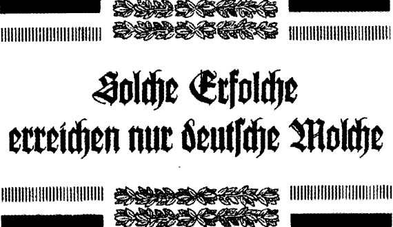

Chỉ vài năm sau khi các quần chủng sa giông đầu tiên đã định cư ở biển Bắc và biển Baltic, nhà nghiên cứu của Đức là Tiến sĩ Hans Thüring đã phát hiện ra sa giông Baltic đã hình thành một số đặc điểm thể chất khác biệt - có lẽ là do môi trường; chẳng hạn như màu da nhạt hơn thấy rõ, dáng đi thẳng hơn và chỉ số sọ cho thấy hộp sọ của chủng sa giông này dài hơn và hẹp hơn các chủng khác, chủng loại này được gọi là Sa giông phương Bắc - DER NORDMOLCH hay Sa giông Cao quý - DER EDELMOLCH và có tên khoa học là Andris Scheuchzeri var. nobilis erecta Thüring (chủng loại Andrias Scheuchzeri biến thể Thüring đứng thẳng cao quý).
Thế là báo chí Đức bắt đầu quan tâm ráo riết tới sa giông Baltic. Báo chí đặc biệt nhấn mạnh là nhờ môi trường Đức mà loài sa giông nay đã phát triển thành một chủng loại cao cấp hơn, và rõ ràng là ưu việt hơn các chủng sa giông khác. Giọng điệu khỉnh bỉ, các ký giả viết về các chủng sa giông thoái hóa, còi cọc cả thể xác lẫn tinh thần ở Địa Trung Hải; về các chủng sa giông man di vùng nhiệt đới, và về các chủng súc sinh, mọi rợ và hạ tiện ở các quốc gia khác. Những lời có cánh của thời đó là:

Từ Đại Sa giông tới Siêu Sa giông Đức Quốc
“Há chẳng phải nguồn gốc của mọi sa giông hiện đại sau này đã được tìm thấy trên đất Đức sao? Há chẳng phải cái nôi của sa giông là ở gần Öhningen, nơi mà Tiến sĩ Johannes Jakob Scheuchzer đã phát hiện ra những đấu vết hóa thạch tuyệt hảo từ thế Miocen sao? Cho nên không còn nghi ngờ gì nữa, loài Andrias Scheuchzeri nguyên thủy đã sinh ra trên đất nước Đức từ bao niên kỷ địa chất xa xưa; nếu như sau này sa giông đã di cư sang các vùng biển và khu vực khác thì cái giá đắt phải trả là sự sa sút và suy thoái về mặt tiến hóa của giống loài này; nhưng một khi đã quay lại định cư trên đất nước của tổ tiên thì một lần nữa sa giông lại trở thành những gì vốn là nguyên thủy của chủng tộc: sa giông Scheuchzeri phương Bắc cao quý, màu da sáng, dáng đi thẳng hiên ngang, hộp sọ dài thông thái. Như vậy chỉ trên đất nước Đức, sa giông mới trở lại được hình thức tinh tuyền và thượng đẳng, đúng như những gì Tiến sĩ Johannes Jakob Scheuchzer vĩ đại đã phát hiện từ những dấu vết trong mỏ đá Öhningen. Đó chính là lý do Đức Quốc cần có nhiều bờ biển mới và dài hơn, Đức Quốc cần nhiều thuộc địa, Đức Quốc cần nhiều đại dương để cho một thế hệ mới của sa giông Đức thuần khiết, trinh nguyên có thể phát triển trong vùng biển của Đức. Chúng ta cần có thêm không gian mới cho sa giông của chúng ta”. Báo chí Đức đã viết như thế.
Và để cho niềm tự hào ấy luôn hiển hiện trước mắt nhân dân Đức, một đài tưởng niệm khổng lồ tôn vinh Johannes Jakob Scheuchzer đã được dựng lên ở Berlin. Tư thế vị tiến sĩ danh tiếng kia được thể hiện là đang cầm một pho sách dày trong tay; dưới chân ông là một Sa giông phương Bắc cao quý, ngồi thẳng lưng, mắt nhìn xa xăm dõi theo những bến bờ vô tận của đại dương thế giới.
Đương nhiên, lúc khánh thành đài tưởng niệm quốc gia này thì phải có nhiều bài diễn văn long trọng được công bố và thu hút sự chú ý của báo chí khắp thế giới. HIỂM HỌA MỚI TỪ NƯỚC ĐỨC là phản ứng chủ yếu của báo chí Anh. “Chúng ta đã quá quen với loại giọng điệu này, nhưng trong một sự kiện chính thức như vậy, chúng ta lại nghe rằng nước Đức đang cần có 5.000 km bờ biển mới trong vòng ba năm tới thì chúng ta buộc phải đáp trả một cách dứt khoát rằng: Được, cứ thử đi! Thử xem chuyện gì xảy ra nếu các người xâm lấn bờ biển Anh Quốc, chúng ta đã sẵn sàng và trong ba năm tới sẽ còn sẵn sàng hơn nữa. Anh Quốc phải có và sẽ có số chiến hạm nhiều bằng tổng số tàu chiến của cả hai cường quốc lớn nhất lục địa châu Âu hợp lại; cán cân quyền lực này mãi mãi không bao giờ thay đổi. Nếu các người muốn phát động một cuộc chạy đua vũ trang hải quân điên rồ, cứ việc! Nhưng sẽ không có một người Anh nào cho phép tổ quốc mình tụt hậu dù chỉ trong gang tấc”.
Sir Francis Drake, Bộ trưởng Hải quân Anh Quốc, thay mặt Chính phủ tuyên bố trước Nghị viện: “Chúng ta chấp nhận thách thức của Đức. Bất kỳ ai muốn nhúng tay vào bất kỳ đại dương nào trên thế giới đều sẽ phải đương đầu với thành lũy thép các chiến hạm của chúng ta. Vương quốc Anh đủ sức mạnh để đập tan mọi cuộc tấn công vào các tiền đồn hay bờ biển của các thuộc địa và lãnh địa của mình. Trước viễn cảnh chờ đón tấn công như thế, chúng ta cũng sẽ cân nhắc tới việc xây dựng thêm lục địa mới, hải đảo mới, pháo đài và căn cứ không quân mới ở bất kỳ vùng biển nào mà những ngọn sóng xô vào bờ thuộc chủ quyền Anh Quốc, cả những bờ biển nhỏ bé nhất. Hãy xem đây là lời cảnh cáo cuối cùng cho bất kỳ ai muốn thay đổi dù chỉ một tấc đất bờ biển thế giới”. Kết quả là Nghị viện thông qua dự án đóng thêm nhiều chiến hạm mới với kinh phí dự trù là nửa triệu bảng Anh. Quả thực, đó là câu trả lời ấn tượng đáp lại việc xây đài tưởng niệm Johannes Jakob Scheuchzer đầy khiêu khích ở Berlin; đài tưởng niệm này chỉ tốn có12.000 đồng mark Đức.
Trước những tuyên bố này, Marquis de Sade - một ký giả lỗi lạc của Pháp, người luôn có những nguồn tin chính xác - đã nhận định như sau: “Ngài Bộ trưởng Hải quân Anh tuyên bố là Anh Quốc đã sẵn sàng cho mọi tình huống. Tốt lắm; thế nhưng quý ngài có biết rằng trong lực lượng sa giông biển Baltic của mình, nước Đức đã có một đạo quân thường trực được vũ trang hùng hậu, với quân số hiện nay đã lên tới năm triệu quân sa giông chuyên nghiệp, có thể triển khai ngay lập tức dưới nước và trên bờ biển, quý ngài có biết điều ấy không? Thêm vào đó là 17 triệu sa giông hậu cầu và kỹ thuật, bất cứ lúc nào cũng có thể trở thành quân dự bị và đạo quân chiếm đóng, ông ấy có biết không? Sa giông Baltic hiện nay là những chiến binh giỏi nhất thế giới; đã được tẩy não tâm lý tuyệt đối, xem chiến tranh là sứ mệnh đích thực và cao quý; xung trận với nhiệt huyết của kẻ cuồng tín, với lý trí lạnh lùng của một nhà kỹ thuật và tinh thần kỷ luật khủng khiếp của một Sa giông chất Phổ đích thực.
Và chưa hết, ngài Bộ trưởng Hải quân Anh có biết là nước Đức đang ráo riết chế tạo những loại tàu vận tải mới, mỗi chiếc có thể chuyên chở cả lữ đoàn sa giông thiện chiến không? Ông ấy có biết là hàng trăm và hàng trăm chiếc tàu ngầm nhỏ đang được chế tạo với tầm hoạt động từ 3.000 đến 5.000 km, cùng thủy thủ đoàn toàn là sa giông Baltic không? Ông ấy có biết là nước Đức đang thiết lập những bồn chứa nhiên liệu khổng lồ ngầm dưới nước ở nhiều địa điểm khác nhau khắp các đại dương không? vậy thì bây giờ chúng ta nhắc lại câu hỏi đó một lần nữa: công dân Anh có hoàn toàn chắc chắc là đất nước vĩ đại của họ đã thật sự chuẩn bị sẵn sàng cho mọi tình huống?”
Marquis de Sade viết tiếp: “Quả là không khó hình dung được sa giông sẽ có ý nghĩa gì trong cuộc chiến tranh kế tiếp khi chúng được trang bị đại pháo, súng cối và ngư lôi để phong tỏa các bờ biển; tôi tin rằng đây là lần đầu tiên trong lịch sử sẽ không có ai thấy mình cần phải ganh tị với địa thế quần đảo tuyệt vời của nước Anh nữa. Nhưng trong khi chúng ta bàn những việc này, Bộ Hải quân Anh có biết là các sa giông Baltic được trang bị một loại máy móc mới, bình thường thì có vẻ vô hại, gọi là máy khoan khí áp không? Đó là loại khoan có thể xuyên thấu mười mét đá granit cứng nhất của Thụy Điển trong vòng một giờ và chọc thủng sáu chục mét đất đá vôi của Anh trong cùng thời gian đó. (Điều này đã được khẳng định bằng các chuyến thử nghiệm tiến hành bí mật của Đức vào các đêm 11,12 và 13 tháng qua trên bờ biển Anh giữa Hythe và Folkestone, tức là ngay trước mũi pháo đài ở Dover). Tôi đề nghị những người bạn của chúng ta ở bên kia eo biển Manche hãy tự tính toán xem mất bao nhiều tuần lễ từ dưới mặt nước biển khoan lên thì các vùng Kent hay Essex sẽ thủng lỗ chỗ như miếng phó mát Thụy Sĩ. Cho tới nay dân Ăng-lê cứ lo lắng nhìn lên trời, như thể đó là nơi duy nhất mà sự hủy diệt có thể đổ ập xuống các đô thành thịnh vương của họ, xuống Ngân hàng Anh Quốc hay những điền trang bình yên và ấm cúng giữa những mành dây leo thường xuân xanh tươi. Nhưng giờ đây, tất nhất là họ nên áp tai xuống mặt đất nơi trẻ con chơi đùa thì hơn: nếu không phải hôm nay thì ngày mai, ắt hẳn họ sẽ nghe thấy tiếng rì rầm khoét sâu từng chút một của những công cụ đáng sợ và không biết mệt mỏi mà các sa giông đang khoan dưới lòng đất để đặt vào đấy những thứ thuốc nổ chưa từng biết tới? Kỳ tích mới mẻ nhất của thời đại chúng ta sẽ không phải là chiến tranh trên bầu trời mà là chiến tranh dưới mặt nước và dưới lòng đất. Chúng tôi đã nghe những lời tự tin từ viên chỉ huy đang đứng trên đài canh của chiến hạm Anh kiêu hãnh; đúng, nước Anh vẫn là một chiến hạm hùng mạnh đang lướt sóng và thống trị đại dương; nhưng sẽ có một ngày những ngọn sóng ấy sẽ bao trùm một xác tàu tan nát và nhận chìm nó xuống những vực thẳm của trùng khơi. Kịp thời đối mặt với nguy cơ này, không phải chuyện nên làm sao? Ba năm nữa thì đã là quá muộn đấy!”.
Lời cảnh báo từ ký giả Pháp tài ba này đã khiến Anh Quốc rụng rời khiếp đảm; bất kể mọi phủ nhận chính thức, dân chúng khắp nước Anh đều nghe thấy tiếng máy khoan của sa giông rì rầm trong lòng đất dưới chân mình. Giới chức Đức Quốc tất nhiên kịch liệt phủ nhận và bác bỏ bài báo đã trích dẫn, họ tuyên bố toàn bộ luận điệu đó chỉ là khiêu khích và sặc mùi tuyên truyền thù địch; thế nhưng cùng lúc đó những cuộc tập trận phối hợp vẫn diễn ra trên biển Baltic bao gồm các lực lượng hải quân và bộ binh Đức, có sự tham gia của binh chủng sa giông. Trong các cuộc tập trận này, nhiều trung đội công binh sa giông - ngay trước mắt nhiều tùy viên quân sự nước ngoài - đã khoan từ dưới lên và cho nổ tung 6 km vuông dãy đồi cát gần Rügenwald. Nghe nói đó là một cảnh tượng hoành tráng khi cùng với tiếng ầm vang kinh động, mặt đất bị nhấc bổng lên “như một tảng băng trôi vỡ vụn” và sau đó nổ tung thành một bức tường khói, cát và đá tảng tung tóe; bầu trời tối sầm lại như đêm đen, và cát rơi như mưa trong bán kính cả trăm kilômét, mấy ngày sau mưa cát vẫn còn tuôn xuống tận Vacsava trên đất Ba Lan. Vụ nổ cực lớn này khiến cát mịn và bụi li ti lơ lửng trong bầu khí quyển nhiều tới mức cho đến hết năm đó, những buổi hoàng hôn trên khắp châu Âu đều đẹp lộng lẫy dị thường, đẹp chưa từng thấy, ngùn ngụt và đỏ rực như máu.
Vùng biển tràn ngập nơi bờ cát đã bị nổ tung, sau này được đặt tên là Scheuchzer-See tức hồ Sa giông, và đó là điểm hẹn của vô số chuyến dã ngoại và tham quan của học sinh Đức, những đứa trẻ hát vang bài “sa giông ca” yêu thích:
Solche Erfolche erreichen nur deutsche Molche.
Vinh quang thay Sa giông Đức Quốc